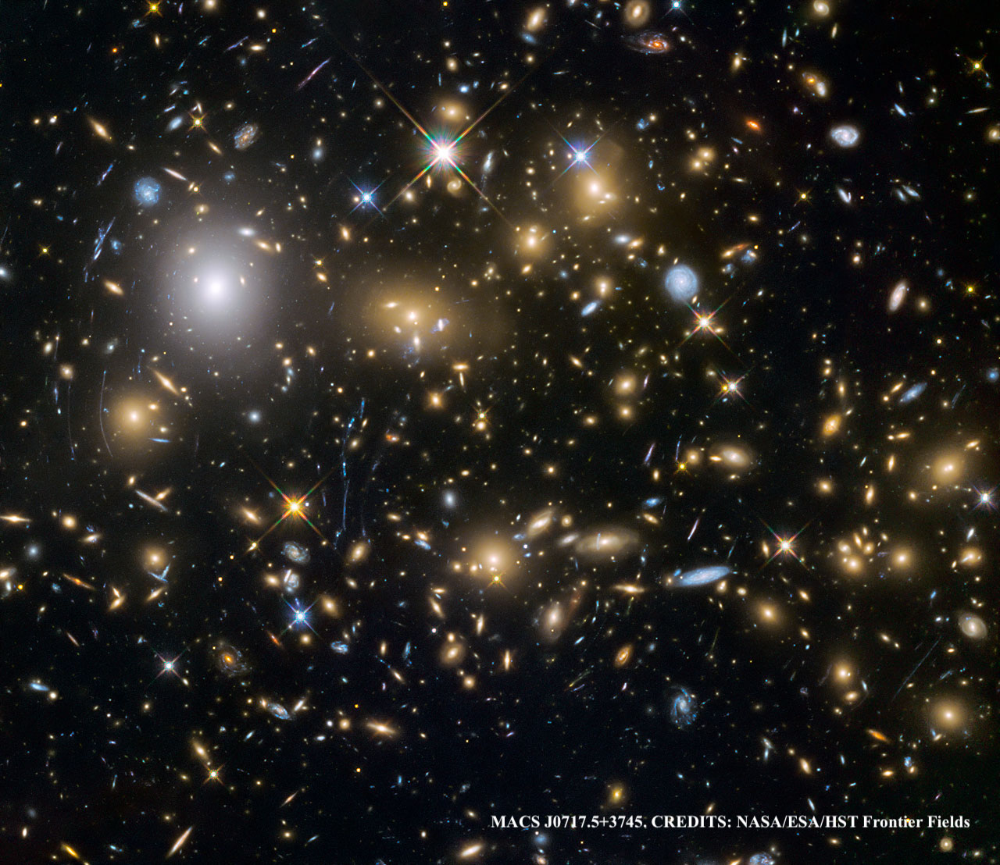
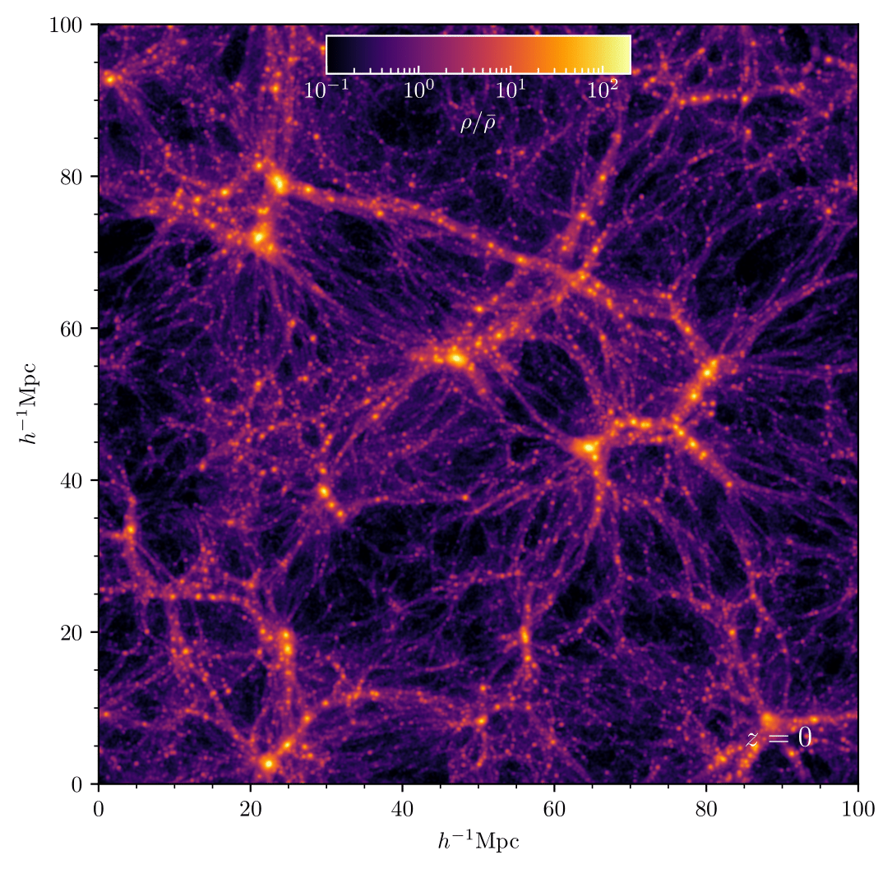
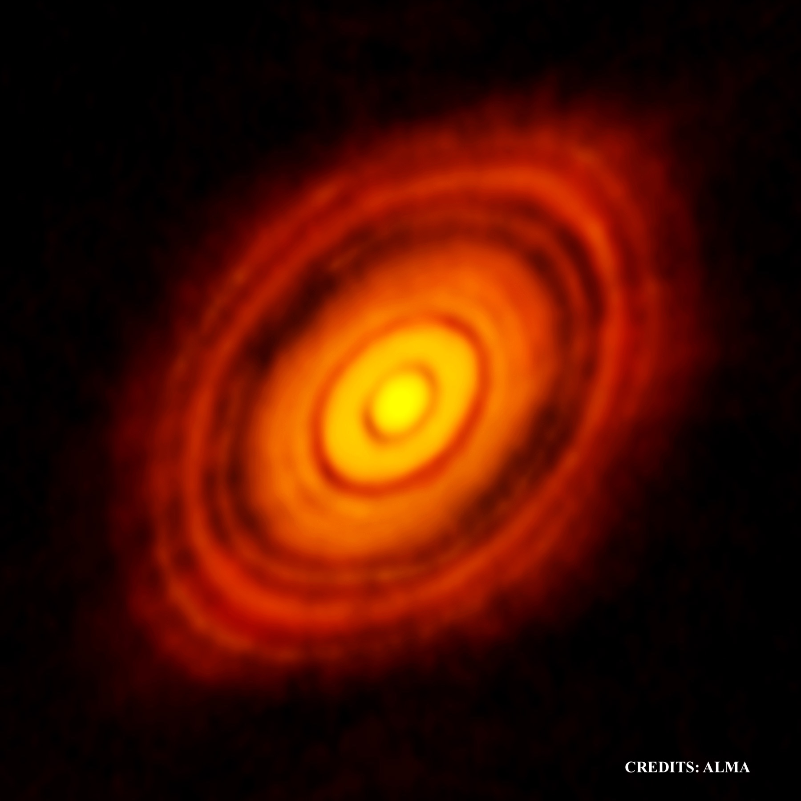
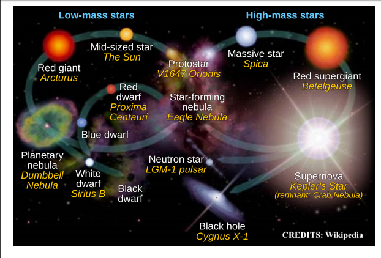
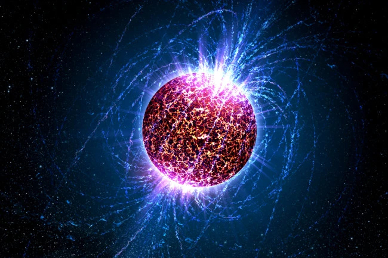

Subhrat Praharaj's Personal Website
Hello world! I work on developing scientific codes to simulate and theoretically understand the inner workings of various astrophysical phenomena.
I also try to implement the growing advances in the field of Machine Learning in my project pipelines to aid this understanding. While I have worked on
phenomology ranging from scales of protoplanetary disks to galaxy clusters, I am now settling towards galactic and extragalactic phenomena combining studies
of kinetic particle interactions with Magnetohydrodynamic turbulence (General Relativistic and otherwise) to understand stucture formation and
feedback phenomena more fundamentally.
Research Work

Cosmic ray diffusion in interstellar medium
Cosmic ray propagation, especially at test particle scales are considered to be strictly
dependent on the averaged magnetic field structure itself. There has been very little attention given to
the effects of underlying Magnetohydrodynamic parameters on the diffusion behaviour of
cosmic rays. One of such parameters is the driving mode that governs the way in which turbulence is driven in gas,
and in turn how the magnetic field structure evolves and thus indirectly the CR diffusion. As part
of my thesis, I was supervised by Christoph Federrath
and Amit Seta to develop MHD-Test Particle
integration and analysis pipeline to study the effect of turbulence driving on CR diffusion. This
involved forming scaling relationships between diffusion parameters and Alfvén Mach number, CR energies while
comparing the obtained scalings over different modes of driving. We also obtained interesting results on the
regimes of diffusion at these scales. [Paper in prep!]

Virial mass estimation of galaxy clusters using GNNs
Graph Neural Networks are a very exciting tool gaining recent impetus in the Machine
Learning community, as well as Astronomy and Astrophysics due to it's performance on
large, unstructured data and their abilty to capture spatial information more efficiently through
the use of computational graph based operations. Anothe advantage they hold is in terms of
scalability as graphs can inherently be partitioned that enables them to be effectively distributed
over nodes in HPC clusters. All this sparks massive potential with astronomical datasets
which are inherently unstructured and span terabytes of data. I am working with
Francisco-Villaescusa Navarro
to apply GNNs to infer galaxy cluster masses using the UCHUU dataset and SDSS4 catalogs for training and testing
respectively. GNNs are trickier to build and have to be trained carefully to ensure geometrical invariance
which is key to modelling cosomological simulations.

Structure formation in modified gravity cosmologies
Modified gravity theories are gaining impetus in recent years as an alternative
to dark energy understanding of the observed accelerated expansion of the universe.
I collaborated with Oleksii Sokoliuk and PK Sahoo
among other collaborators to work on various projects involving large scale structure
formation and exotic compact objects in Modified Gravities. These works included
radiative transfer calculation using test particle orbital motion solutions representing
accretion flows around diffierent wormhole geomtries,
and using SPH simulations to model large scale structure formation in f(Q) gravity cosmology.
A common theme in these studies is constraining initial condition parameters from observed
data to generate initial conditions for the simulations from where we extract observables
for large-scale structure such as density/temperature/mean molecular weight fields, matter power
spectrum (both 2/3D, with/without redshift space distortions), bispectrum, two-point correlation function
and halo mass function. [Further studies in this series of papers under prep!]

Planet mass and position estimation in protoplanetary disks using CNNs
Current observation techniques do not allow us to identify young exoplanets forming
in protoplanetary disks. Thus, most of the current planet formation theories build
upon planet masses predicted by analytical means. However. these estimates depend on
definitions of gap width and gap depth from observed PPD data, and given multiple such
definitions we have poor reproducability of such results. Assuming gaps form through
planets opening them (there are various other means of gap opening too), we use computer
vision to overcome this issue of reproducability. Working with a team of researchers from
all over the globe, me and Sayantan Auddy
built and trained CNNs on a PPD image dataset that is synthetically generated (hydro sims + radiative transfer),
geometrically invariant, and degenerate in gap space to predict planet masses and positions given dust
continuum images of radio wavelengths such as those obtained by ALMA/VLA. [Paper in prep!]
Older Research...

Stellar population synthesis to understand Humphreys-Davidson limit
The Humphreys-Davidon limit is a very famous unsolved problem in stellar astronomy.
The non-existence or non-observability of highly luminous massive stars has been attributed
to a wide variety of probable reasons but the true stellar populations have never been accurately
recovered. As part of an undergraduate summer internship at TAU, I worked with Iair Arcavi and Avishai Gilkis
to code a synthetic population synthesis software that formed complex stellar populations
with informed assumptions on star formation history, multiplicity and mixing. This work also used
evolution tracks with different compositions corresponding to LMC, SMC, and the Milky Way.

Constraing dense matter EoS in neutron stars usning bayesian analysis and symbolic regression
There are several methods in literature to constraion neutron star dense matter EoS. These include both
parametric approaches, like spectral parametrisation or piecewise polytope models where we try to fit
candidate EoS as best as possible with minimum parameters, and parameter agnostic ones, where we take a
large number of EoS functionals with literature informed ranges on pressure-density space to recover candidate EoS.
Apart from these, there is also the chiral EFT approach for low densities where we know the nuclear physics, and either
agnostic or parametric approach in the high density regions where we do not know the Nuclear physics. I explored
combinations of inferring nuclear empirical parameters for low densities and 3-piece piecewise polytrope for
higher densities, with the transition densities obtained using bauyesian evidence. The data was obtained from
3 spot mass-radius samples from Miller et al. and LIGO data from
GW170817 and GW190425 merger events. I also compared results from the bayesian proceedure against symbolic regression
to implement and explore methods discussed in Tenachi et al.
Movies
Cosmic ray propagation for solenoidally and compressively
driven, subsonic turbulence (M = 0.1) in the alfvenic regime (MA = 1.0). Derived from work done in MSc thesis, paper in prep.
Teaching Assignments
From Astrochemistry to Planetary habitability, MSc Elective, Feb-March 2024
Life Outside Astronomy
I closely follow football, cricket and MMA. I have been a Manchester United fan since 2008 which was pretty much around the time
I started watching the game itself. Watching a game at Old Trafford is a dream, so photos will follow soon (hopefully)!
Apart from sports, I love travelling, listening to rap and various rock genres, watching anime and reading manga.
I am particularly a huge fan of One Piece and HunterXHunter.
On the social front I was actively involved with the National Service Scheme during my sophomore year in 2019. I worked within the
capacity of a volunteer taking part in events involving the upliftment of old age homes and collection of data concerning domestic
abuse in suburban regions around Hyderabad.
Codes
Under Construction!

{kind=link}
{kind=link}
{kind=link}
{kind=link}
{kind=link}